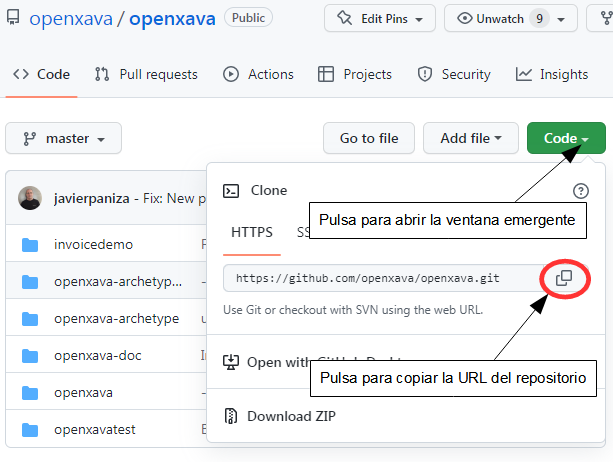

Desde v7.0
Descargar el código desde GitHub
Primero ve a la pagina de OpenXava en GitHub y copia la URL del repositorio:
Después abre la perspectiva Git en OpenXava Studio, para ello pulsa en el botón en la esquina superior derecha:


Una vez en la perspectiva Git, pulsa en Clone a Git repository:

Dado que la has copiado desde la página de GitHub, la URL del repositorio OpenXava se ha rellenado automáticamente, sólo tienes que pulsar en Next:

Se muestran todas las ramas, simplemente pulsa en Next:

Para acabar pulsa en Finish:

Ahora sé paciente mientras que el código del repositorio se descarga desde GitHub:

Cuando acabe tendrás el repositorio openxava listado en la parte izquierda de OpenXava Studio:

¡Enhorabuena! El repositorio de OpenXava está descargado en tu ordenador y configurado en el OpenXava Studio. El siguiente paso es importar el proyecto openxava en tu workspace.
Importar openxava en el workspace
Primero, vuelve a la perspectiva Java, para ello pulsa el botón correspondiente en la esquina superior derecha del OpenXava Studio:

Para importar el proyecto openxava pulsa en File > Import...:

Ahora selecciona Git > Projects from Git y pulsa en Next:

Escoge Existing local repository y pulsa en Next:

Selecciona el repositorio openxava y pulsa en Next:

Selecciona la carpeta openxava y pulsa en Next:

Asegurate de que openxava está marcado y pulsa en Finish:

Y por fin el proyecto openxava con todo su código está en tu workspace:

Ahora ya puedes modificar el código de openxava a tu gusto.
Modificar código de OpenXava
Primero, asegurate de que la versión en openxava/pom.xml es una SNAPSHOT. Abre el pom.xml dentro del proyecto openxava y verifica la versión:

Si estás usando la rama master seguramente la versión será una SNAPSHOT, si no modificala añadiendo el sufijo -SNAPSHOT. Esto significa que es una versión de trabajo, sin código congelado sino lista para ser modificada.
Ahora es el momento de modificar el código. Por ejemplo, edita el código de NewAction.java code añadiendo un print, como esto:

Después haz un mvn install en openxava, de esta manera:

En esta ocasión no es necesario hacer un mvn clean porque acabamos de descargar el código y target está vacío, pero si coges código nuevo desde GitHub (con un pull) deberías hacer un mvn clean también.
Ahora, ve a tu proyecto, edita el pom.xml y pon en la propiedad openxava.version el valor de la versión SNAPSHOT de OpenXava que tienes en tu workspace:

Esto es importante, porque si no tu proyecto no usará tu versión modificada sino la versión oficial de Maven Central.
Después haz un mvn clean en tu proyecto:

Y un mvn install también en tu proyecto:

!Enhorabuena! Tu proyecto está listo para que lo ejecutes con tu OpenXava modificado. Pruébalo.
Acortar el ciclo de modificación
Los pasos de arriba son para la primera modificación. A partir de ahora va a ser más fácil. Para hacer una modificación sólo necesitas tres pasos:
- Modifica el código de openxava.
- Haz un mvn install en openxava.
- Haz un mvn war:exploded en tu proyecto. Para esto puedes usar Run As > Build Maven ...
Y la siguiente vuelta de tuerca es usar el modo debug. Arranca tu aplicación pulsando el escarabajo:

De esta forma podrás modificar el código de openxava y ver el resultado en el acto, sin relanzar la aplicación e incluso sin recargar la página en el navegadro. Magia pura.
Ramas
En el ejemplo de arriba hemos modicado directamente la rama master, lo que no es un problema dado que no tienes permisos para hacer un push contra el repositorio de OpenXava. Sin embargo, puedes hacer un uso más avanzado de las ramas. Como mínimo, deberías crear tu propia rama antes de hacer cualquier cambio y hacer el cambio en tu propia rama. Cuando el cambio esté completo y funcione bien, puedes mezclar tu rama con el master.
Si quieres contribuir código a OpenXava, deberías crearte una cuenta en GitHub y después hacer un clon del repositorio de OpenXava en tu cuenta. Sigue las instrucciones de arriba pero coge el código de tu propio repositorio en vez desde openxava/openxava. De esta forma, puedes crear una rama, hacer un push y crear un pull request contra el repositorio original de OpenXava, donde podría ser aprobado e incluido en la siguiente versión oficial de OpenXava.